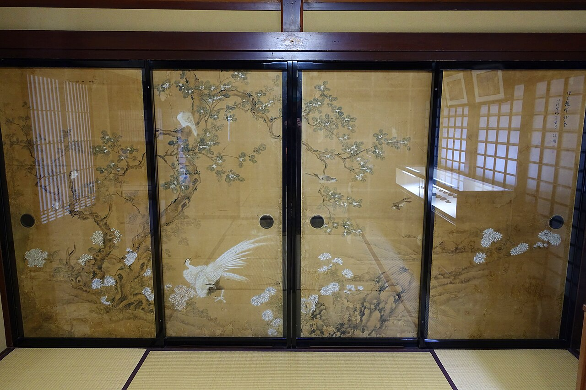
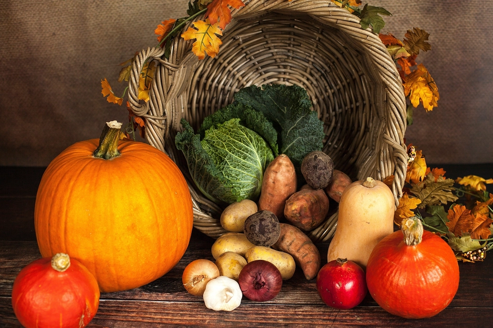
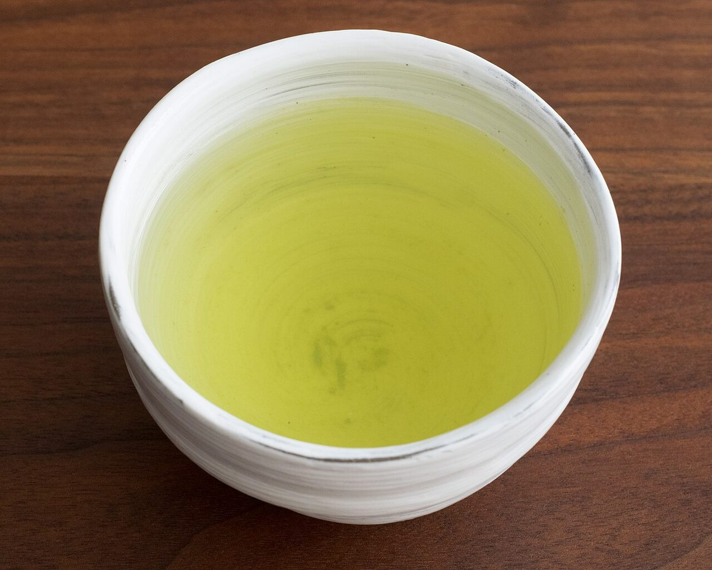

お部屋とお食事
一棟まるごと、あなただけの一日。

山あいの、古い家
宿となる建物は、この地で長く暮らされてきた農家の離れです。のちに手を入れ、宿として生まれ変わりました。見上げると太い梁、足もとには土間。使い込まれた木の色が、部屋にやわらかな陰影をつくっています。一棟まるごと、一日一組。定員は2〜5名です。

しつらえ
襖には、季節の草花を描いた絵が残っています。飾り立てず、古い家の佇まいをそのままに整えました。
- 広間(囲炉裏)
- 宿の中心です。夕食も、食後の語らいも、ここで。
- 寝室
- 畳に布団をのべます。夜は、風の音が届くほどの静けさです。
- 檜の貸切風呂
- 檜の香る内風呂を、ご滞在中は貸切でお使いいただけます。
- 縁側
- 昼は日だまり、夜は小さな灯りのもとで。
- 洗面・トイレ
- 清潔に整えた水まわりです。
テレビとWi-Fiは置いていません。画面から離れる一日を、お過ごしください。

囲炉裏のおもてなし
近隣の農家と川の恵みを、囲炉裏の火とともに。
献立は季節や仕入れにより変わります。


朝食朝
散策のあとの、やさしいお膳
散策のあとの朝は、やさしいお膳です。お茶、温かいお粥、香ばしい干物、季節の漬物。体の内側から、ゆっくり目覚めていただけます。

料金とご案内
- 料金
- 1泊2食 2名1室利用で1名 ¥00,000〜(見本)
(人数・季節により異なります) - チェックイン
- 15:00
- チェックアウト
- 10:00
- キャンセル
- 7日前まで無料、6日前〜前日は宿泊料金の50%、当日・無連絡は100%(見本の規定)
- アレルギー
- 事前にお知らせください。可能な範囲で対応いたします。
- お子様
- ご一緒にご宿泊いただけます。ご予約時に年齢をお知らせください。
- ペット
- ご同伴いただけません。
ご予約・お問い合わせは「アクセス・ご予約」へ